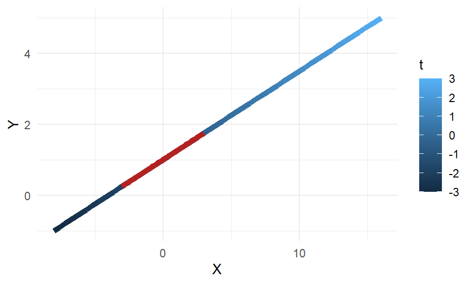

Master Notes
Multivariable Calculus
- This may be better refered to as multidimensional calculus
- three dimentional
- two inputs, one output
- two inputs, two outputs
Chapter 11 Parametric Equations and Polar Coordiates
Parametric Equations
- if there is a supposed function that fails the vertical line test, it is possible that it is legit by being defined by two continuous functions.
- when this is the case we also are given the path of the particle \((x, y) = (f(t), g(t))\) at any time (\(t\))
- I assume this is like linear algebra where this is three dimentions, but maybe they’re visualizing it in two dimentions for some reason.
- We are learning about parametric curves
- If \(x\) and \(y\) are given as functions \(x=f(t)\) and \(y=g(t)\) over an interval \(I\) of \(t\)-values, then the set of points \((x, y) = (f(t), g(t))\) defined my these equations is a parametric curve.
- If \(I\) is a closed interval, \(a \le t \le b\), the point \((f(a)), g(a))\) is the \(\textbf{initial point}\)
- What are the exact definitions of \(a\) and \(b\)?
- I learned from MathisPower4u that paranetric equations are when x and y are defined in terms of t. From what I currently understand, this is not quite three dimentional. A new thing that comes into play with parametric equations is that movement of the particle is implied from one way to another. This means lines to make up the plot are correct, but arrows are more accurate for this situation.
- T is what is made to define x and y, and it often meant as time.
- This can get into physics concepts but this is not what we will focus on. x y charts are often used to show that y is a result of x. In this new concept, again to emphasise, (we’re in multivariable–multidimentional calculus) x and y are results of t.
Rather than using xy tables like this:
Say our equation given is \(y = 2x + 1\)
| \(X\) | \(Y\) |
|---|---|
| -2 | -3 |
| -1 | -1 |
| 0 | 1 |
| 1 | 3 |
| 2 | 5 |
We will be using t-input/xy-output charts:
Now we have \(x(t) = 3x\) and \(y(t) = x + 1\)
| \(T\) | \(X\) | \(Y\) |
|---|---|---|
| -2 | -6 | -1 |
| -1 | -3 | 0 |
| 0 | 0 | 1 |
| 1 | 3 | 2 |
| 2 | 6 | 3 |
As Kang said, “We’ve crossed the threshold.”
I guess normal xy tables/equations/graphs in single variable calculus are refered to as rectangular equations, whereas now we are at parametric equations.
Also, at least in this beginning stages of calculus, we can turn parametric equations into a rectangular equation. This is refered to as eliminating the parameter.
Example:
Converting Parametric Equations into a Rectangular Equation
General How-To Steps:
- Solve for \(t\) in one of the equations
- Substitute that into the second equation
- Simplify
- If the equation involves trigonometric functions, trig identities may be needed.
- The domain may need to be adjusted upon the original parametric equation
Prompt: Write the parametric equations as a rectangular equation and state the domain, then graph.
\(x(t)\): \(x = 4t + 4\)
\(y(t)\): \(y = t + 2\)
Step 1. Solve for \(t\) in one of the equations
\(x = 4t + 4\) and \(y = t + 2\), let’s solve for \(y\) for \(t\). We get \(t = y - 2\).
Step 2. Now we’ll substitute this into the other equation we have, the \(x\) equation.
We get \(x = 4(y-2) + 4\).
Step 3. Simplify
If we simplify this for \(y\), we get our rectangular equation. That is \(y = \frac{1}{4}x + 1\)
Cycloids
I think this is just a shape or a path
ChatGPT
A cycloid is a specific type of curve that is generated by a point on the circumference of a circle as it rolls along a straight line. The path traced by the point is called the cycloid curve.
The shape of the cycloid curve is determined by the radius of the rolling circle and the distance between the point and the center of the circle. The curve is made up of a series of cusps, or “humps”, with the number and size of the cusps depending on the radius of the circle.
In addition, Cycloids have some interesting geometric properties, such as the length of the cycloid is 3 times the diameter of the circle that generates it and the area enclosed by a cycloid is 3 times the area of the rolling circle.
Cycloids are also related to other mathematical objects, such as the epicycloid and the hypocycloid, which are generated by a point on the circumference of a circle that rolls along the inside or outside of another circle, respectively.
Brachistochrones and Tautochrones
Summary: Brachistochrones are the shortest path between two points while Tautochrones are the fastest path between two points, both for an object moving under the influence of gravity and both have cycloids as solutions.
Deets: The Brachistochrone problem and the Tautochrone problem are related mathematical problems that deal with the shortest time or the fastest time taken by an object sliding without friction to travel between two points.
Brachistochrone is a curve that is the shortest path between two points for an object. It is a path that minimizes the time for an object to travel from one point to another.
Tautochrone is a curve that is the fastest path between two points for an object. It is a path that minimizes the time for an object to travel from one point to another.
Homework
Question 1:
- \(t\) represents time. The third variable (think 3-D)
- Solve for \(t\) using either the \(x\) or the \(y\) equations given. Then pug in \(t\) to the other equation to find the graph.
- That equation we solved for \(t\) comes in later when we tell which way the graph goes (left-to-right or right-to-left)
Question 2:
- Something like \(\array{x=2\cos{2t}\\y=2\sin{2t}}\) is a basic formula for a circle
- To graph this in Desmos, put it like this: \(\left(2\cos\left(2t\right),\ 2\sin\left(2t\right)\right)\)
- Remember to put the parameter bounds
- This equation will be of use at some time, I think: \(\frac{(x-h)^{2}}{a^{2}} + \frac{(y-2)^{2}}{b^2} = 1\). If \(a\) and \(b\) are the same, its a circle, if not, its an elipses.
- This is an interesting thing! \(x\)’s and \(y\)’s. Pay attention to them. Plug them in and check uper carefully.
From Khan Academy:
- With 3D surfaces, ultimately we get surfaces
- \(z = f(x, y)\)
- With surfaces being such a thing, I can see how integrals will be used to find the AUC.
- contour plots (where we find contour lines) take three dimentional plots and allow us to visualize them in two dimentional plots
- They can sometimes mark where z is equal to 0
- Vector definition from Despicable Me:
- “A quantity represented by an arrow with both direction and magnitude”
- Vector definition from ChatGPT:
- a mathematical object that has both magnitude (size) and direction
- Common notation for vector is a letter with an arrow above it like \(\vec{u}\)
- They can also be used to represent geometric shapes, such as points and lines, in a mathematical form.
- A donut shape is known as a torus in mathematics
- 3D vectors are a thing insert mind-blown emoji here
- Are vectors \(\left[ \matrix{y \\ x \\ z} \right]\) or \(\left[ \matrix{x \\ y \\ z} \right]\)
- Why would we go beyond the third dimention? I’m thinking in terms of Saunders linear regression and we represent them as on/off switches, right?
- Are multivariable functions and parametric functions the same?
- Multiple outputs \(\sim\) “vector-valued functions”
- Former (less correct) Way of thinking: Functions take in a number and spit out a number
- Current (more comprehensive) way of thinking: In multivariable calculus, functions can take in any thing and spit out any thing. That thing can be a list of numbers (meaning a vector??
c())
Example of different types of functions
| Single-number input | Multiple-number inputs | Visualization Method | |
|---|---|---|---|
| Single-number output | \(f(x)=x^{2}\) | \(f(x, y) = x^{2} + y^{3}\) | Number line |
| Multiple-number output | \(f(t)=(\cos{t}, \sin{t})\) | \(f(u, v) = (u^{2}-v, v^{2}+u)\) | 2-D XY plane |
| Three Dimentional | 3-D XYZ Plane |
- A multivariable function is just a function whose input and/or output is made up of multiple numbers.
- In contrast, a function with single-number inputs and single-number outputs is called a single-variable function
- \(\left[ \matrix{2 \\ 5} \right] \text{ is the same as } 2\hat{\textbf{j}} + 5\hat{\textbf{j}}\)
- Vectors are more so arrows rather than lines
- Functions whose output is a vector are called vector-valued functions
- Functions with a single number as their output are called either scalar-valued or real-valued
- thanks to that chart I just saw about time and location, I now see y+ as north, y- as south, x+ as east, and x- as west, and now I understand why z+ is elevation upwards and z- is elevation downwards.
- Derivatives are the study of the rate of change of a function as you tweak its input
- Integrals are the study of how to add together infinitely many infinitesimal quantities that make up a function’s output
Tangents and Areas
Differentiation Refresher:
- the rate of change of a function at a given point
- the instantaneous rate of change
- this section is finding derivatives of composite functions (or polar functions?)
Length of a Parametrically Defined Curve
- I think this is a bogus way of finding the length, similar to using n rectangles to find the area under the curve
Length of a Curve \(y=f(x)\)
The Arc Length Differential
Areas of Surfaces of Revolution
Finding the AUC of 3D surfaces?
Definition of Polar Coordinates
Polar Equations and Graphs
Polar coordinates are often represented by the ordered pair \((r, \theta)\), where \(r\) is the distance from the origin to the point, and θ is the angle measured in radians, counterclockwise from the positive x-axis.
Relating Polar and Cartesian Coordinates
Parabolas
textbook
openstaxs
chatgpt
khan academy
josh tutor
Email INL
Insurance and car
Josh tutor